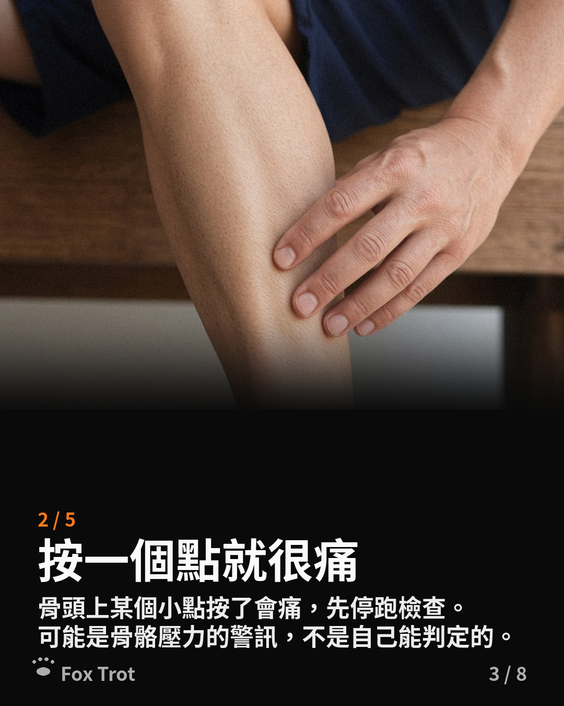
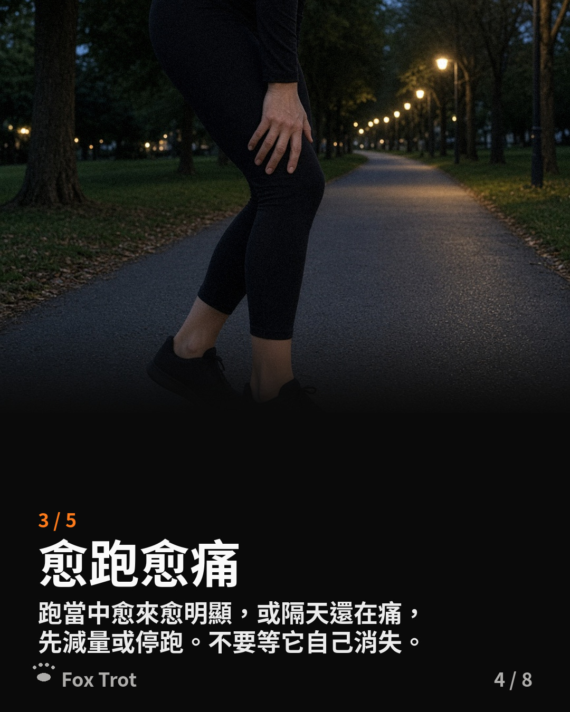
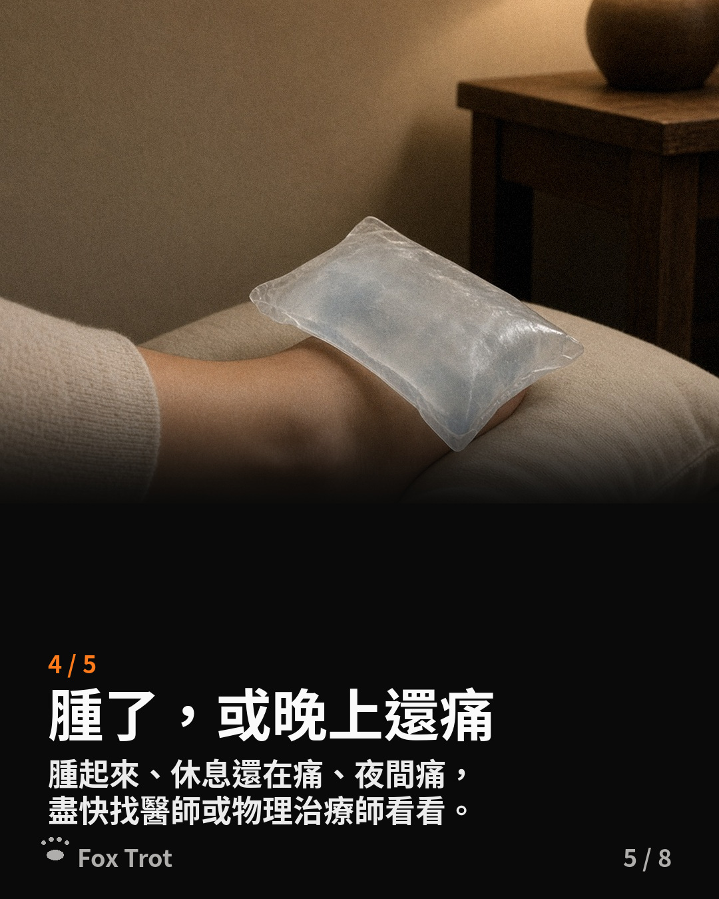
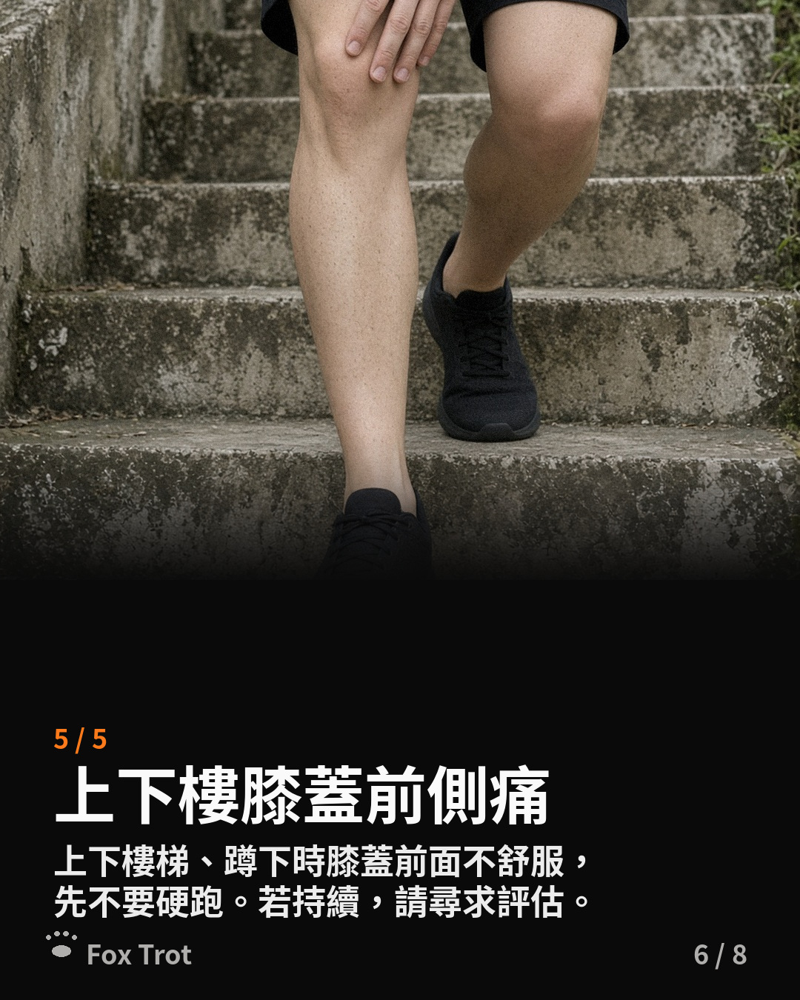
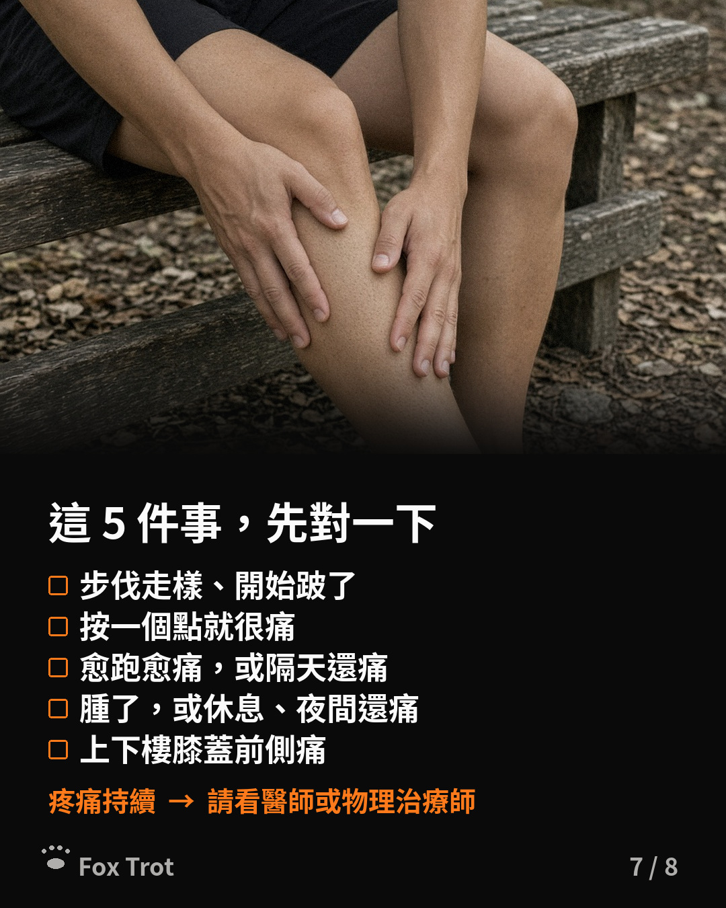

Fox Trot





1 / 8
♡ 讚💬 留言↗ 分享
Fox Trot 痛一點再跑就會好？不一定。
新手跑者最常踩的坑，不是速度不夠，是明明有警訊還硬跑。
這 5 種情況，建議先停下來對一下：
1. 痛到步伐走樣、開始跛了
2. 骨頭上一個點按了就很痛
3. 跑當中愈跑愈痛，或隔天還在痛
4. 腫了，或休息、夜間還在痛
5. 上下樓或蹲下時，膝蓋前側不舒服
這不是診斷，也不是保證碰到就一定受傷。只是值得先停跑、值得檢查的警訊。
疼痛持續，請看醫師或物理治療師。